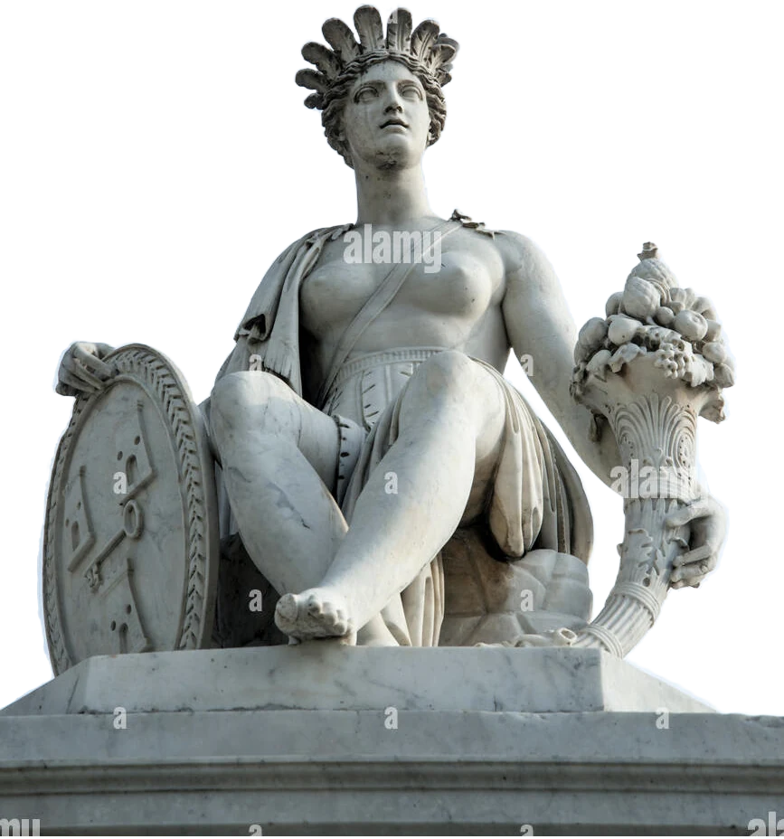
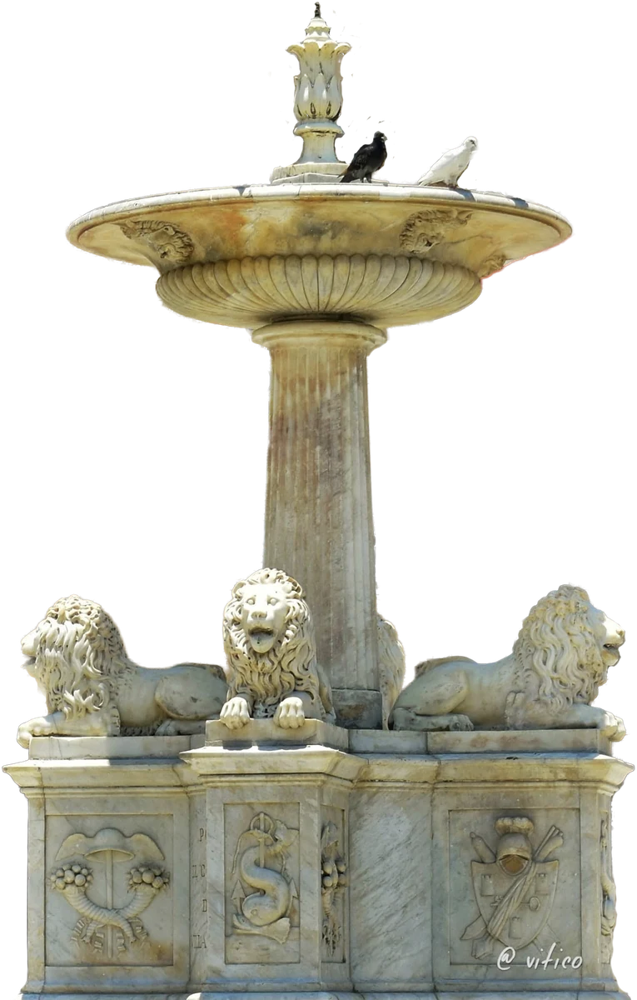
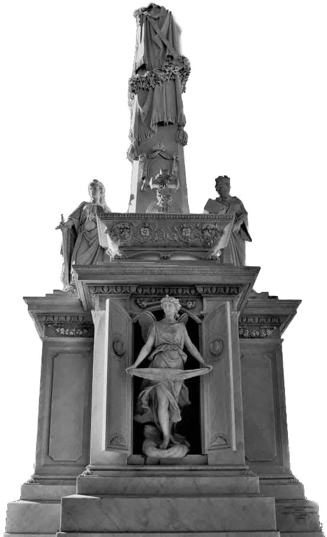
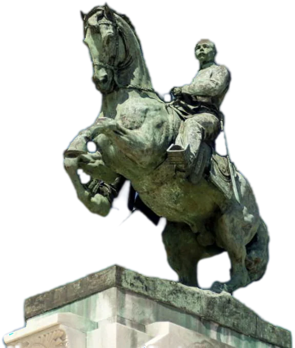
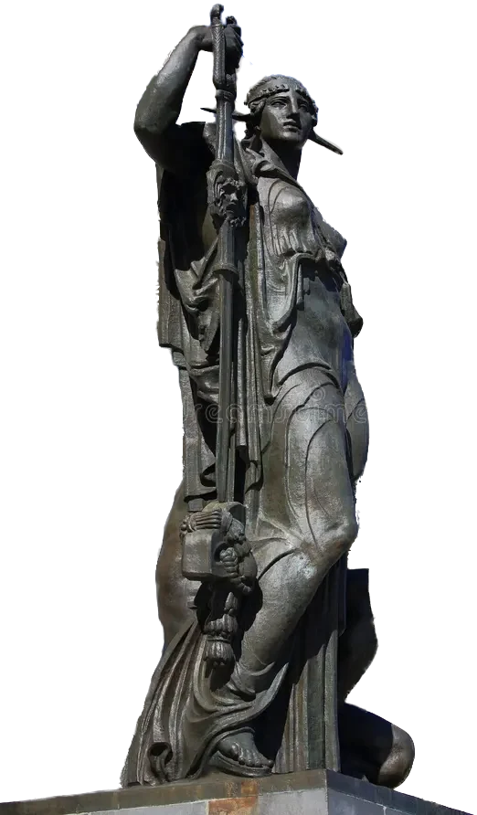
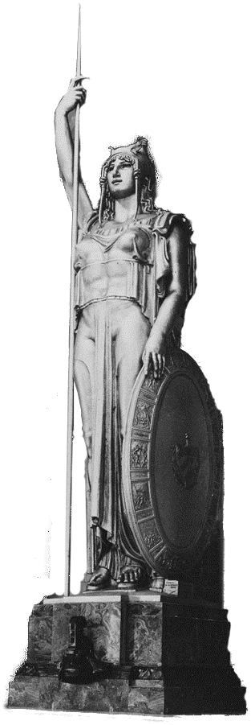
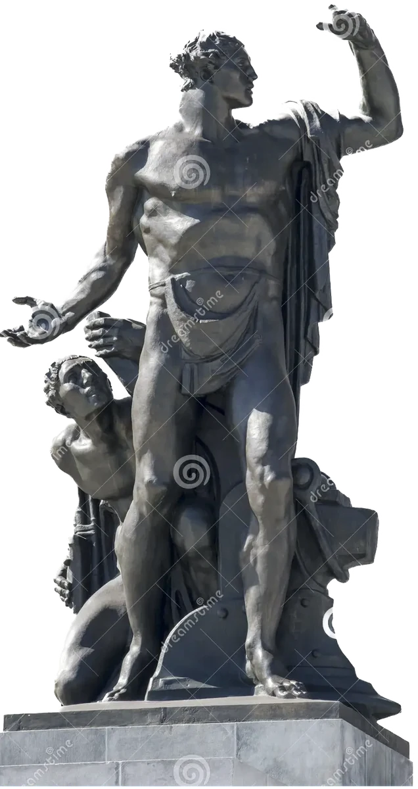

7 monumentos que traducen la identidad nacional del mármol al bronce.
De Carrara a La Habana: un diálogo transatlántico entre modelos italianos y símbolos cubanos.
Pulsa un año de la línea del tiempo o una escultura para ver su historia






